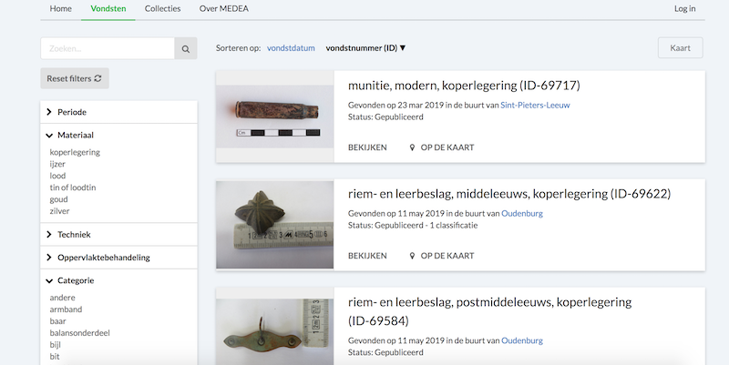

Vondsten.be is een website waar metaaldetectoristen hun vondsten kunnen registreren. De website is ontstaan als een project van de VUB. Ik was mee verantwoordelijk voor de ontwikkeling van het datamodel voor de achterliggende graafdatabank en volgde mee de ontwikkeling van de website op. De website zelf werd ontwikkeld door We Open Data.

Beeldbankkusterfgoed.be
Beeldbank Kusterfgoed is een beeldbank voor de beeldcollecties van de gemeentes en steden Oostede, De Haan, Bredene en Middelkerke. Ik was mee verantwoordelijk voor het uitwerken van de user stories en use cases, het opstellen van het datamodel voor het DAM-systeem, het uitwerken van het lastenboek en de opvolging van de ontwikkeling van de Beeldbank. De website werd gemaakt door Calibrate, de backend door Zeticon.
IIIF en Catmandu
IIIF is een standaard-in-wording voor de online uitwisseling en presentatie van beelden binnen de cultureel-erfgoedsector. Catmandu is een tool om gestructureerde metadata in een andere vorm te gieten. Ik schreef een script om de metadata en afbeeldingen van honderd kunstwerken van KMKSA in een CSV-bestand om te zetten naar honderd IIIF-manifests via Catmandu. Bekijk het script op GitHub. Lees het volledige verslag op CEST
Beelden uit verschillende collecties kunnen via IIIF in eenzelfde viewer bekeken worden
Resurrection Lab
Resurrection Lab is een tweejarig onderzoeksproject van PACKED vzw en iMAL. Het wil een bijdrage leveren aan het opvullen van het hiaat dat vandaag bestaat m.b.t. de expertise over de preservering van born-digital kunstwerken en het gebruik van emulatie. In kader van dit onderzoeksproject werd data gecapteerd van 3,5" en 5,25" diskettes van resp. Liberaal Archief en ADVN. Hiervoor schreef ik twee scriptjes om het capteerproces te automatiseren. Bekijk de scripts op GitHub.
Een opstelling om data van obsolete dragers te capteren.
Website Het Bijgaardehof
Deze website werd gecreëerd door de themagroep 'Buurt' van de cohousingsgroepen De Wijgaard, De Spore en De Biotope.
BreakOutBoxClient
In het kader van het vak 'Projecten II' heb ik samen met twee andere studenten een .NET-applicatie gemaakt om leerlingen spelenderwijs een sessie van oefeningen en acties te laten spelen. De app bestond uit twee delen: enerzijds het spelgedeelte waar de leerlingen zich kunnen inschrijven voor een groepje en de sessie kunnen spelen; anderzijds het admingedeelte waar de leerkracht een sessie kan starten en het verloop van het spel kan volgen.